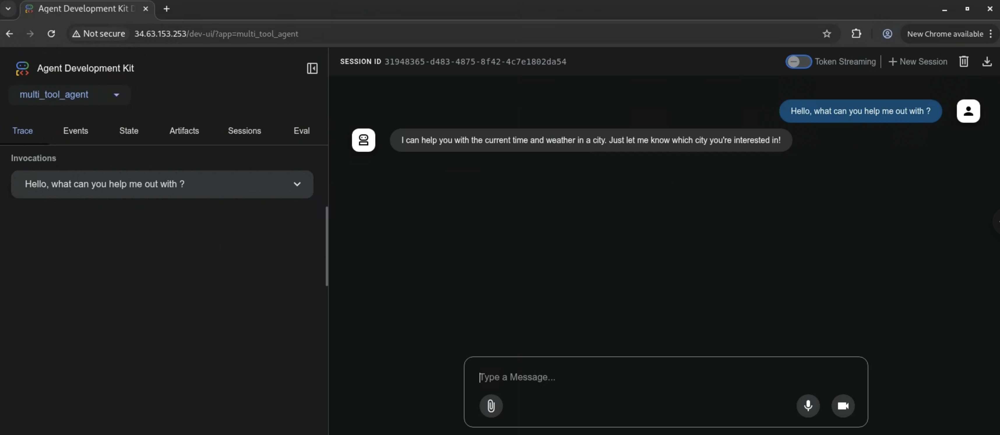

Google Kubernetes Engine (GKE)에 배포하기¶
GKE는 Google Cloud의 관리형 Kubernetes 서비스입니다. Kubernetes를 사용하여 컨테이너화된 애플리케이션을 배포하고 관리할 수 있습니다.
에이전트를 배포하려면 GKE에서 실행 중인 Kubernetes 클러스터가 필요합니다. Google Cloud 콘솔이나 gcloud 명령줄 도구를 사용하여 클러스터를 생성할 수 있습니다.
이 예제에서는 간단한 에이전트를 GKE에 배포합니다. 이 에이전트는 LLM으로 Gemini 2.0 Flash를 사용하는 FastAPI 애플리케이션입니다. 환경 변수 GOOGLE_GENAI_USE_VERTEXAI를 사용하여 Vertex AI 또는 AI Studio를 LLM 제공자로 사용할 수 있습니다.
환경 변수¶
설정 및 설치 가이드에 설명된 대로 환경 변수를 설정하세요. 또한 kubectl 명령줄 도구를 설치해야 합니다. 설치 지침은 Google Kubernetes Engine 문서에서 찾을 수 있습니다.
export GOOGLE_CLOUD_PROJECT=your-project-id # GCP 프로젝트 ID
export GOOGLE_CLOUD_LOCATION=us-central1 # 또는 선호하는 위치
export GOOGLE_GENAI_USE_VERTEXAI=true # Vertex AI를 사용하는 경우 true로 설정
export GOOGLE_CLOUD_PROJECT_NUMBER=$(gcloud projects describe --format json $GOOGLE_CLOUD_PROJECT | jq -r ".projectNumber")
jq가 설치되어 있지 않다면, 다음 명령어를 사용하여 프로젝트 번호를 얻을 수 있습니다.
그리고 출력에서 프로젝트 번호를 복사합니다.
API 및 권한 활성화¶
Google Cloud에 인증되었는지 확인하세요 (gcloud auth login 및 gcloud config set project <your-project-id>).
프로젝트에 필요한 API를 활성화합니다. gcloud 명령줄 도구를 사용하여 이 작업을 수행할 수 있습니다.
gcloud services enable \
container.googleapis.com \
artifactregistry.googleapis.com \
cloudbuild.googleapis.com \
aiplatform.googleapis.com
gcloud builds submit 명령어에 필요한 기본 컴퓨트 엔진 서비스 계정에 필요한 역할을 부여합니다.
ROLES_TO_ASSIGN=(
"roles/artifactregistry.writer"
"roles/storage.objectViewer"
"roles/logging.viewer"
"roles/logging.logWriter"
)
for ROLE in "${ROLES_TO_ASSIGN[@]}"; do
gcloud projects add-iam-policy-binding "${GOOGLE_CLOUD_PROJECT}" \
--member="serviceAccount:${GOOGLE_CLOUD_PROJECT_NUMBER}-compute@developer.gserviceaccount.com" \
--role="${ROLE}"
done
배포 페이로드¶
ADK 에이전트 워크플로를 Google Cloud GKE에 배포하면 다음 콘텐츠가 서비스에 업로드됩니다.
- ADK 에이전트 코드
- ADK 에이전트 코드에 선언된 모든 의존성
- 에이전트가 사용하는 ADK API 서버 코드 버전
adk deploy gke 명령어의 --with_ui 옵션과 같은 배포 설정을 지정하지 않는 한, 기본 배포에는 ADK 웹 사용자 인터페이스 라이브러리가 포함되지 않습니다.
배포 옵션¶
에이전트를 GKE에 Kubernetes 매니페스트를 사용하여 수동으로 배포하거나 adk deploy gke 명령어를 사용하여 자동으로 배포할 수 있습니다. 워크플로에 가장 적합한 접근 방식을 선택하세요.
옵션 1: gcloud와 kubectl을 사용한 수동 배포¶
GKE 클러스터 생성¶
gcloud 명령줄 도구를 사용하여 GKE 클러스터를 생성할 수 있습니다. 이 예제에서는 us-central1 리전에 adk-cluster라는 이름의 Autopilot 클러스터를 생성합니다.
GKE Standard 클러스터를 생성하는 경우, Workload Identity가 활성화되었는지 확인하세요. Workload Identity는 AutoPilot 클러스터에서 기본적으로 활성화됩니다.
gcloud container clusters create-auto adk-cluster \
--location=$GOOGLE_CLOUD_LOCATION \
--project=$GOOGLE_CLOUD_PROJECT
클러스터를 생성한 후, kubectl을 사용하여 연결해야 합니다. 이 명령어는 kubectl이 새 클러스터의 자격 증명을 사용하도록 구성합니다.
gcloud container clusters get-credentials adk-cluster \
--location=$GOOGLE_CLOUD_LOCATION \
--project=$GOOGLE_CLOUD_PROJECT
에이전트 생성¶
LLM 에이전트 페이지에 정의된 capital_agent 예제를 참조하겠습니다.
진행하려면 프로젝트 파일을 다음과 같이 구성하세요.
your-project-directory/
├── capital_agent/
│ ├── __init__.py
│ └── agent.py # 에이전트 코드 (아래 "Capital Agent 예시" 참조)
├── main.py # FastAPI 애플리케이션 진입점
├── requirements.txt # Python 의존성
└── Dockerfile # 컨테이너 빌드 지침
코드 파일¶
your-project-directory/의 루트에 다음 파일들(main.py, requirements.txt, Dockerfile, capital_agent/agent.py, capital_agent/__init__.py)을 생성합니다.
-
capital_agent디렉토리 안의 Capital Agent 예시입니다.capital_agent/agent.pyfrom google.adk.agents import LlmAgent # 도구 함수 정의 def get_capital_city(country: str) -> str: """주어진 국가의 수도를 검색합니다.""" # 실제 로직으로 대체 (예: API 호출, 데이터베이스 조회) capitals = {"france": "Paris", "japan": "Tokyo", "canada": "Ottawa"} return capitals.get(country.lower(), f"죄송합니다, {country}의 수도를 모릅니다.") # 에이전트에 도구 추가 capital_agent = LlmAgent( model="gemini-2.0-flash", name="capital_agent", # 에이전트 이름 description="주어진 국가의 수도에 대한 사용자 질문에 답변합니다.", instruction="""당신은 국가의 수도를 제공하는 에이전트입니다... (이전 지침 텍스트)""", tools=[get_capital_city] # 함수를 직접 제공 ) # ADK가 root_agent 인스턴스를 발견할 것입니다 root_agent = capital_agent디렉토리를 파이썬 패키지로 표시합니다.
-
이 파일은 ADK의
get_fast_api_app()을 사용하여 FastAPI 애플리케이션을 설정합니다.main.pyimport os import uvicorn from fastapi import FastAPI from google.adk.cli.fast_api import get_fast_api_app # main.py가 위치한 디렉토리를 가져옵니다 AGENT_DIR = os.path.dirname(os.path.abspath(__file__)) # 세션 서비스 URI 예시 (예: SQLite) SESSION_SERVICE_URI = "sqlite+aiosqlite:///./sessions.db" # 예: 빠른 시작용 로컬 SQLite # CORS를 위한 허용된 출처 예시 ALLOWED_ORIGINS = ["http://localhost", "http://localhost:8080", "*"] # 웹 인터페이스를 제공하려는 경우 web=True로, 그렇지 않으면 False로 설정 SERVE_WEB_INTERFACE = True # 함수를 호출하여 FastAPI 앱 인스턴스를 가져옵니다 # 에이전트 디렉토리 이름('capital_agent')이 에이전트 폴더와 일치하는지 확인 app: FastAPI = get_fast_api_app( agents_dir=AGENT_DIR, session_service_uri=SESSION_SERVICE_URI, allow_origins=ALLOWED_ORIGINS, web=SERVE_WEB_INTERFACE, ) # 필요한 경우 아래에 더 많은 FastAPI 라우트나 구성을 추가할 수 있습니다 # 예시: # @app.get("/hello") # async def read_root(): # return {"Hello": "World"} if __name__ == "__main__": # Cloud Run에서 제공하는 PORT 환경 변수를 사용하며, 기본값은 8080입니다 uvicorn.run(app, host="0.0.0.0", port=int(os.environ.get("PORT", 8080)))참고:
agent_dir를main.py가 있는 디렉토리로 지정하고, Cloud Run 호환성을 위해os.environ.get("PORT", 8080)를 사용합니다. -
필요한 Python 패키지를 나열합니다.
-
컨테이너 이미지를 정의합니다.
DockerfileFROM python:3.13-slim WORKDIR /app COPY requirements.txt . RUN pip install --no-cache-dir -r requirements.txt RUN adduser --disabled-password --gecos "" myuser && \ chown -R myuser:myuser /app COPY . . USER myuser ENV PATH="/home/myuser/.local/bin:$PATH" CMD ["sh", "-c", "uvicorn main:app --host 0.0.0.0 --port $PORT"]
컨테이너 이미지 빌드¶
컨테이너 이미지를 저장할 Google Artifact Registry 저장소를 만들어야 합니다. gcloud 명령줄 도구를 사용하여 이 작업을 수행할 수 있습니다.
gcloud artifacts repositories create adk-repo \
--repository-format=docker \
--location=$GOOGLE_CLOUD_LOCATION \
--description="ADK repository"
gcloud 명령줄 도구를 사용하여 컨테이너 이미지를 빌드합니다. 이 예제는 이미지를 빌드하고 adk-repo/adk-agent:latest로 태그를 지정합니다.
gcloud builds submit \
--tag $GOOGLE_CLOUD_LOCATION-docker.pkg.dev/$GOOGLE_CLOUD_PROJECT/adk-repo/adk-agent:latest \
--project=$GOOGLE_CLOUD_PROJECT \
.
이미지가 빌드되어 Artifact Registry에 푸시되었는지 확인합니다.
gcloud artifacts docker images list \
$GOOGLE_CLOUD_LOCATION-docker.pkg.dev/$GOOGLE_CLOUD_PROJECT/adk-repo \
--project=$GOOGLE_CLOUD_PROJECT
Vertex AI를 위한 Kubernetes 서비스 계정 구성¶
에이전트가 Vertex AI를 사용하는 경우, 필요한 권한을 가진 Kubernetes 서비스 계정을 생성해야 합니다. 이 예제는 adk-agent-sa라는 서비스 계정을 생성하고 Vertex AI 사용자 역할에 바인딩합니다.
AI Studio를 사용하고 API 키로 모델에 접근하는 경우 이 단계를 건너뛸 수 있습니다.
gcloud projects add-iam-policy-binding projects/${GOOGLE_CLOUD_PROJECT} \
--role=roles/aiplatform.user \
--member=principal://iam.googleapis.com/projects/${GOOGLE_CLOUD_PROJECT_NUMBER}/locations/global/workloadIdentityPools/${GOOGLE_CLOUD_PROJECT}.svc.id.goog/subject/ns/default/sa/adk-agent-sa \
--condition=None
Kubernetes 매니페스트 파일 생성¶
프로젝트 디렉토리에 deployment.yaml이라는 Kubernetes 배포 매니페스트 파일을 생성합니다. 이 파일은 GKE에 애플리케이션을 배포하는 방법을 정의합니다.
cat << EOF > deployment.yaml
apiVersion: apps/v1
kind: Deployment
metadata:
name: adk-agent
spec:
replicas: 1
selector:
matchLabels:
app: adk-agent
template:
metadata:
labels:
app: adk-agent
spec:
serviceAccount: adk-agent-sa
containers:
- name: adk-agent
imagePullPolicy: Always
image: $GOOGLE_CLOUD_LOCATION-docker.pkg.dev/$GOOGLE_CLOUD_PROJECT/adk-repo/adk-agent:latest
resources:
limits:
memory: "128Mi"
cpu: "500m"
ephemeral-storage: "128Mi"
requests:
memory: "128Mi"
cpu: "500m"
ephemeral-storage: "128Mi"
ports:
- containerPort: 8080
env:
- name: PORT
value: "8080"
- name: GOOGLE_CLOUD_PROJECT
value: $GOOGLE_CLOUD_PROJECT
- name: GOOGLE_CLOUD_LOCATION
value: $GOOGLE_CLOUD_LOCATION
- name: GOOGLE_GENAI_USE_VERTEXAI
value: "$GOOGLE_GENAI_USE_VERTEXAI"
# AI Studio를 사용하는 경우, GOOGLE_GENAI_USE_VERTEXAI를 false로 설정하고 다음을 설정합니다:
# - name: GOOGLE_API_KEY
# value: $GOOGLE_API_KEY
# 에이전트가 필요로 할 수 있는 다른 모든 필요한 환경 변수를 추가합니다
---
apiVersion: v1
kind: Service
metadata:
name: adk-agent
spec:
type: LoadBalancer
ports:
- port: 80
targetPort: 8080
selector:
app: adk-agent
EOF
애플리케이션 배포¶
kubectl 명령줄 도구를 사용하여 애플리케이션을 배포합니다. 이 명령어는 배포 및 서비스 매니페스트 파일을 GKE 클러스터에 적용합니다.
잠시 후, 다음을 사용하여 배포 상태를 확인할 수 있습니다.
이 명령어는 배포와 관련된 파드(pod)를 나열합니다. Running 상태의 파드를 볼 수 있어야 합니다.
파드가 실행되면, 다음을 사용하여 서비스 상태를 확인할 수 있습니다.
출력에 External IP가 표시되면 서비스가 인터넷에서 접근 가능하다는 의미입니다. 외부 IP가 할당되기까지 몇 분 정도 걸릴 수 있습니다.
다음 명령어를 사용하여 서비스의 외부 IP 주소를 얻을 수 있습니다.
옵션 2: adk deploy gke를 사용한 자동 배포¶
ADK는 GKE 배포를 간소화하는 CLI 명령어를 제공합니다. 이를 통해 수동으로 이미지를 빌드하거나, Kubernetes 매니페스트를 작성하거나, Artifact Registry에 푸시할 필요가 없습니다.
사전 요구사항¶
시작하기 전에 다음이 설정되었는지 확인하세요.
-
실행 중인 GKE 클러스터: Google Cloud에 활성 Kubernetes 클러스터가 필요합니다.
-
필수 CLI:
gcloudCLI: Google Cloud CLI가 설치, 인증되고 대상 프로젝트를 사용하도록 구성되어야 합니다.gcloud auth login과gcloud config set project [YOUR_PROJECT_ID]를 실행하세요.- kubectl: 애플리케이션을 클러스터에 배포하기 위해 Kubernetes CLI가 설치되어 있어야 합니다.
-
활성화된 Google Cloud API: Google Cloud 프로젝트에서 다음 API가 활성화되었는지 확인하세요.
- Kubernetes Engine API (
container.googleapis.com) - Cloud Build API (
cloudbuild.googleapis.com) - Container Registry API (
containerregistry.googleapis.com)
- Kubernetes Engine API (
-
필수 IAM 권한: 명령어를 실행하는 사용자 또는 Compute Engine 기본 서비스 계정은 최소한 다음 역할이 필요합니다.
-
Kubernetes Engine 개발자 (
roles/container.developer): GKE 클러스터와 상호 작용하기 위함. -
Storage 객체 뷰어 (
roles/storage.objectViewer): Cloud Build가 gcloud builds submit이 업로드하는 Cloud Storage 버킷에서 소스 코드를 다운로드할 수 있도록 허용. -
Artifact Registry Create on Push 작성자 (
roles/artifactregistry.createOnPushWriter): Cloud Build가 빌드된 컨테이너 이미지를 Artifact Registry에 푸시할 수 있도록 허용. 이 역할은 또한 첫 푸시 시 필요한 경우 Artifact Registry 내에 특별한 gcr.io 저장소를 즉시 생성할 수 있도록 허용. -
로그 작성자 (
roles/logging.logWriter): Cloud Build가 빌드 로그를 Cloud Logging에 쓸 수 있도록 허용.
deploy gke 명령어¶
이 명령어는 에이전트 경로와 대상 GKE 클러스터를 지정하는 매개변수를 받습니다.
구문¶
인수 및 옵션¶
| 인수 | 설명 | 필수 |
|---|---|---|
| AGENT_PATH | 에이전트 루트 디렉토리의 로컬 파일 경로입니다. | 예 |
| --project | GKE 클러스터가 위치한 Google Cloud 프로젝트 ID입니다. | 예 |
| --cluster_name | GKE 클러스터의 이름입니다. | 예 |
| --region | 클러스터의 Google Cloud 리전입니다 (예: us-central1). | 예 |
| --with_ui | 에이전트의 백엔드 API와 동반 프론트엔드 사용자 인터페이스를 모두 배포합니다. | 아니요 |
| --log_level | 배포 프로세스의 로깅 수준을 설정합니다. 옵션: debug, info, warning, error. | 아니요 |
작동 방식¶
adk deploy gke 명령어를 실행하면 ADK가 다음 단계를 자동으로 수행합니다.
-
컨테이너화: 에이전트의 소스 코드로 Docker 컨테이너 이미지를 빌드합니다.
-
이미지 푸시: 컨테이너 이미지에 태그를 지정하고 프로젝트의 Artifact Registry에 푸시합니다.
-
매니페스트 생성: 필요한 Kubernetes 매니페스트 파일(
Deployment및Service)을 동적으로 생성합니다. -
클러스터 배포: 이 매니페스트들을 지정된 GKE 클러스터에 적용하며, 이는 다음을 트리거합니다.
Deployment는 GKE에 Artifact Registry에서 컨테이너 이미지를 가져와 하나 이상의 파드에서 실행하도록 지시합니다.
Service는 에이전트를 위한 안정적인 네트워크 엔드포인트를 생성합니다. 기본적으로 이것은 LoadBalancer 서비스이며, 에이전트를 인터넷에 노출시키기 위해 공용 IP 주소를 프로비저닝합니다.
사용 예시¶
다음은 ~/agents/multi_tool_agent/에 위치한 에이전트를 test라는 GKE 클러스터에 배포하는 실제 예시입니다.
adk deploy gke \
--project myproject \
--cluster_name test \
--region us-central1 \
--with_ui \
--log_level info \
~/agents/multi_tool_agent/
배포 확인¶
adk deploy gke를 사용했다면, kubectl을 사용하여 배포를 확인하세요.
- 파드 확인: 에이전트의 파드가 Running 상태인지 확인합니다.
adk-default-service-name-xxxx-xxxx ... 1/1 Running과 같은 출력이 표시되어야 합니다.
- 외부 IP 찾기: 에이전트 서비스의 공용 IP 주소를 가져옵니다.
kubectl get service
NAME TYPE CLUSTER-IP EXTERNAL-IP PORT(S) AGE
adk-default-service-name LoadBalancer 34.118.228.70 34.63.153.253 80:32581/TCP 5d20h
외부 IP로 이동하여 UI를 통해 에이전트와 상호 작용할 수 있습니다. 
에이전트 테스트¶
에이전트가 GKE에 배포되면, 배포된 UI(활성화된 경우)를 통해 또는 curl과 같은 도구를 사용하여 API 엔드포인트와 직접 상호 작용할 수 있습니다. 배포 후 제공된 서비스 URL이 필요합니다.
UI 테스트¶
UI를 활성화하여 에이전트를 배포한 경우:
웹 브라우저에서 쿠버네티스 서비스 URL로 이동하여 에이전트를 테스트할 수 있습니다.
ADK 개발 UI를 사용하면 브라우저에서 직접 에이전트와 상호 작용하고, 세션을 관리하며, 실행 세부 정보를 볼 수 있습니다.
에이전트가 의도대로 작동하는지 확인하려면 다음을 수행할 수 있습니다.
- 드롭다운 메뉴에서 에이전트를 선택합니다.
- 메시지를 입력하고 에이전트로부터 예상된 응답을 받는지 확인합니다.
예기치 않은 동작이 발생하면 다음을 사용하여 에이전트의 파드 로그를 확인하세요.
API 테스트 (curl)¶
curl과 같은 도구를 사용하여 에이전트의 API 엔드포인트와 상호 작용할 수 있습니다. 이는 프로그래밍 방식의 상호 작용이나 UI 없이 배포한 경우에 유용합니다.
애플리케이션 URL 설정¶
예제 URL을 배포된 Cloud Run 서비스의 실제 URL로 교체하세요.
사용 가능한 앱 목록 보기¶
배포된 애플리케이션 이름을 확인합니다.
(이 출력에 따라 필요하면 다음 명령어의 app_name을 조정하세요. 기본값은 종종 에이전트 디렉토리 이름입니다, 예: capital_agent).
세션 생성 또는 업데이트¶
특정 사용자와 세션의 상태를 초기화하거나 업데이트합니다. capital_agent를 실제 앱 이름으로 교체하세요(다른 경우). user_123과 session_abc 값은 예제 식별자이며, 원하는 사용자 및 세션 ID로 교체할 수 있습니다.
curl -X POST \
$APP_URL/apps/capital_agent/users/user_123/sessions/session_abc \
-H "Content-Type: application/json" \
-d '{"preferred_language": "English", "visit_count": 5}'
에이전트 실행¶
에이전트에 프롬프트를 보냅니다. capital_agent를 앱 이름으로 교체하고 사용자/세션 ID와 프롬프트를 필요에 맞게 조정하세요.
curl -X POST $APP_URL/run_sse \
-H "Content-Type: application/json" \
-d '{
"app_name": "capital_agent",
"user_id": "user_123",
"session_id": "session_abc",
"new_message": {
"role": "user",
"parts": [{
"text": "What is the capital of Canada?"
}]
},
"streaming": false
}'
- Server-Sent Events(SSE)를 받으려면
"streaming": true로 설정하세요. - 응답에는 최종 답변을 포함한 에이전트의 실행 이벤트가 포함됩니다.
문제 해결¶
GKE에 에이전트를 배포할 때 발생할 수 있는 몇 가지 일반적인 문제입니다.
Gemini 2.0 Flash에 대한 403 권한 거부¶
이것은 일반적으로 Kubernetes 서비스 계정이 Vertex AI API에 접근하는 데 필요한 권한이 없음을 의미합니다. Vertex AI를 위한 Kubernetes 서비스 계정 구성 섹션에 설명된 대로 서비스 계정을 생성하고 Vertex AI 사용자 역할에 바인딩했는지 확인하세요. AI Studio를 사용하는 경우, 배포 매니페스트에 GOOGLE_API_KEY 환경 변수를 설정하고 유효한지 확인하세요.
404 또는 찾을 수 없음 응답¶
이것은 일반적으로 요청에 오류가 있음을 의미합니다. 문제를 진단하려면 애플리케이션 로그를 확인하세요.
export POD_NAME=$(kubectl get pod -l app=adk-agent -o jsonpath='{.items[0].metadata.name}')
kubectl logs $POD_NAME
읽기 전용 데이터베이스에 쓰기 시도¶
UI에서 세션 ID가 생성되지 않고 에이전트가 어떤 메시지에도 응답하지 않는 것을 볼 수 있습니다. 이것은 일반적으로 SQLite 데이터베이스가 읽기 전용이기 때문에 발생합니다. 에이전트를 로컬에서 실행한 다음 컨테이너 이미지를 생성할 때 SQLite 데이터베이스가 컨테이너에 복사되면 이런 일이 발생할 수 있습니다. 그러면 데이터베이스는 컨테이너 내에서 읽기 전용이 됩니다.
sqlalchemy.exc.OperationalError: (sqlite3.OperationalError) attempt to write a readonly database
[SQL: UPDATE app_states SET state=?, update_time=CURRENT_TIMESTAMP WHERE app_states.app_name = ?]
이 문제를 해결하려면 다음 중 하나를 수행할 수 있습니다.
컨테이너 이미지를 빌드하기 전에 로컬 머신에서 SQLite 데이터베이스 파일을 삭제합니다. 이렇게 하면 컨테이너가 시작될 때 새 SQLite 데이터베이스가 생성됩니다.
또는 (권장) 프로젝트 디렉토리에 .dockerignore 파일을 추가하여 SQLite 데이터베이스가 컨테이너 이미지에 복사되지 않도록 제외할 수 있습니다.
컨테이너 이미지를 빌드하고 애플리케이션을 다시 배포합니다.
로그 스트리밍 권한 부족 ERROR: (gcloud.builds.submit)¶
이 오류는 빌드 로그를 스트리밍할 권한이 부족하거나 VPC-SC 보안 정책이 기본 로그 버킷에 대한 액세스를 제한할 때 발생할 수 있습니다.
빌드 진행 상황을 확인하려면 오류 메시지에 제공된 링크를 따르거나 Google Cloud 콘솔의 Cloud Build 페이지로 이동하세요.
컨테이너 이미지 빌드 섹션의 명령어를 사용하여 이미지가 빌드되어 Artifact Registry에 푸시되었는지 확인할 수도 있습니다.
Gemini-2.0-Flash가 라이브 API에서 지원되지 않음¶
배포된 에이전트에 ADK Dev UI를 사용할 때 텍스트 기반 채팅은 작동하지만 음성(예: 마이크 버튼 클릭)은 실패합니다. 파드 로그에 모델이 "라이브 API에서 지원되지 않는다"는 websockets.exceptions.ConnectionClosedError가 표시될 수 있습니다.
이 오류는 에이전트가 Gemini Live API를 지원하지 않는 모델(예제의 gemini-2.0-flash와 같은)로 구성되었기 때문에 발생합니다. Live API는 오디오와 비디오의 실시간 양방향 스트리밍에 필요합니다.
정리¶
GKE 클러스터와 모든 관련 리소스를 삭제하려면 다음을 실행하세요.
gcloud container clusters delete adk-cluster \
--location=$GOOGLE_CLOUD_LOCATION \
--project=$GOOGLE_CLOUD_PROJECT
Artifact Registry 저장소를 삭제하려면 다음을 실행하세요.
gcloud artifacts repositories delete adk-repo \
--location=$GOOGLE_CLOUD_LOCATION \
--project=$GOOGLE_CLOUD_PROJECT
더 이상 필요하지 않으면 프로젝트를 삭제할 수도 있습니다. 이렇게 하면 GKE 클러스터, Artifact Registry 저장소 및 생성한 다른 모든 리소스를 포함하여 프로젝트와 관련된 모든 리소스가 삭제됩니다.